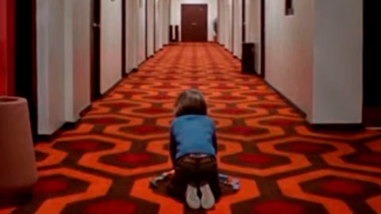

The Shining, 1977
La tercera novel·la de l'escriptor va ser publicada el 1977, amb el nom de The Shining, i ha estat una de les seves obres més notables convertint-se en un supervendes. Va ser una de les adaptacions més conegudes del cinema gràcies a Stanley Kubrick.
Llegir més
It, 1986
Aquesta història de terror va ser publicada l'any 1986 i posterioment és va adaptar al cinema, en diverses ocasions. Explica les experiències d'un grup de nens contra un monstre encarnat en forma de pallasso, alimentant-se de la por de les seves víctimes.
Llegir més
Insomnia, 1984
Insomnia va ser publicada l'any 1984, i nominada al premi Bram Stoker com a millor novel·la del 1994. Tracta sobre un home vell que pateix insomni per culpa de la mort de la seva esposa, fet que li comportarà a tenir cada cop més alucionacions.
Llegir més